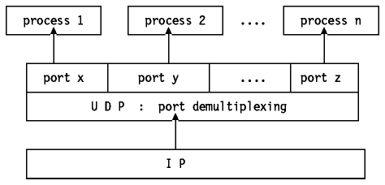
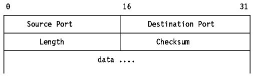

Table of Contents
Table of Contents  AIX
AIXUDP is a standard protocol with STD number 6. UDP is described by RFC 768 - User Datagram Protocol. Its status is recommended, but in practice every TCP/IP implementation which is not used exclusively for routing will include UDP.
UDP is basically an application interface to IP. It adds no reliability,
flow-control or error recovery to IP. It simply serves as a
``multiplexer/demultiplexer'' for sending and receiving datagrams, using
ports to direct the datagrams as shown in
Figure - UDP, A Demultiplexer Based on
Ports. For a more detailed discussion of ports refer to
Ports and Sockets.

Figure: UDP, A Demultiplexer Based on Ports
UDP provides a mechanism for one application to send a datagram to another. The UDP layer can be regarded as being extremely thin and consequently has low overheads, but it requires the application to take responsibility for error recovery and so on.
The port concept was discussed earlier in Ports and Sockets.
Applications sending datagrams to a host need to identify a target which is more specific than the IP address, since datagrams are normally directed to certain processes and not to the system as a whole. UDP provides this by using ports.
A port is a 16-bit number which identifies which process on a host is associated with a datagram. There are two types of port:
The reason for well-known ports is to allow clients to be able to find servers without configuration information. The well-known port numbers are defined in STD 2 - Assigned Internet Numbers.
Note: TCP also uses port numbers with the same values. These ports are quite independent. Normally, a server will use either TCP or UDP, but there are exceptions. For example, Domain Name Servers (see Domain Name System (DNS)) use both UDP port 53 and TCP port 53.
Each UDP datagram is sent within a single IP datagram.
Although, the IP datagram may be fragmented during transmission, the receiving
IP implementation will re-assemble it before presenting it to the UDP layer.
All IP implementations are required to accept datagrams of 576 bytes, which,
allowing for maximum-size IP header of 60 bytes means that a UDP datagram of
516 bytes is acceptable to all implementations. Many implementations will
accept larger datagrams, but this is not guaranteed. The UDP datagram has a
16-byte header which is described in
Figure - UDP Datagram Format.

Figure: UDP Datagram Format
Where:
The pseudo-IP header effectively extends the checksum to include the original (unfragmented) IP datagram.
The application interface offered by UDP is described in RFC 768. It provides for:
The way this should be implemented is left to the discretion of each vendor.
Be aware that UDP and IP do not provide guaranteed delivery, flow-control or error recovery, so these must be provided by the application.
Standard applications using UDP include:
 Transmission
Control Protocol (TCP)
Transmission
Control Protocol (TCP)